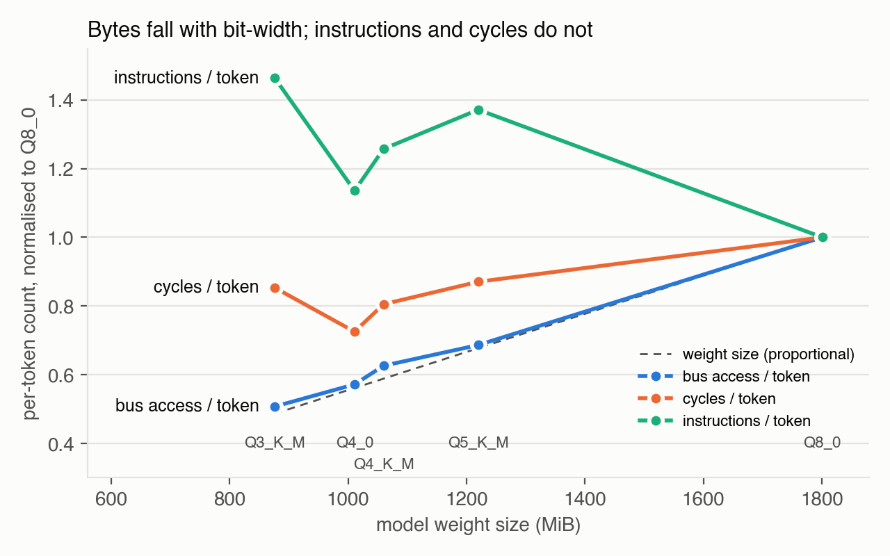
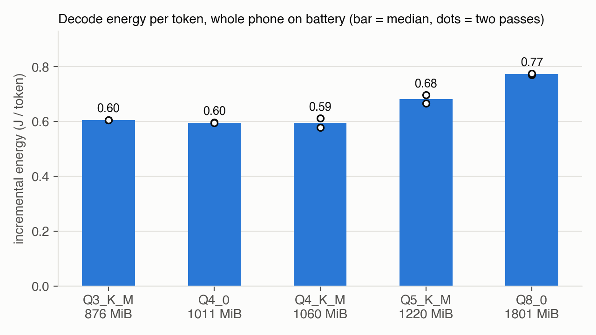

Why fewer bits stop paying off on a Cortex-A53: counters and energy
Jiaxuan (Fred) Wen · Oct 2026 · Sonim XP8800 (Snapdragon 630, 8× Cortex-A53, ARMv8.0, no dot-product), Qwen2.5-1.5B-Instruct, llama.cpp 23deec0, 8 threads, same five GGUF files as the earlier report (sha256 verified).
1. Problem
My earlier report found that Q3_K_M, Q4_0 and Q4_K_M all decoded at about 5.6 tok/s, so Q3_K_M was 17% smaller than Q4_K_M but only ~1% faster. It also found that Q5_K_M was the slowest quant. I attributed this to dequantization ("unpacking") cost, but that was an inference, not a measurement. Power (0.6–1.2 W) had also only been estimated while charging.
2. Method
Counters (simpleperf stat, user-mode only). Events ran in two groups of ≤4, so every counter had 100% coverage with no multiplexing: {cycles, instructions, L1D refill, L2D refill} and {cycles, instructions, bus access}. To isolate decode, I ran llama-bench -p 0 at n = 32 and n = 160 (3 reps each). Per-token value = (X₁₆₀ − X₃₂) / (128 × 3). Every quant was measured twice, in forward and then reverse order.
Attribution (simpleperf record). I sampled cycles and instructions at 2 kHz during -p 0 -n 64 -r 2 and grouped the symbols into three buckets:
- dot kernels:
ggml_vec_dot_q*, which do dequantization plus multiply-add;
- sync:
ggml_graph_compute_thread, into which ggml_barrier is inlined;
- other: everything else.
The recording also covers model load and warm-up, so per-token values are each bucket's sampled share multiplied by the Table 1 per-token total.
Run hygiene (this mattered). With 8 threads on 8 cores, one preempted thread leaves the other 7 spinning in ggml_barrier. This injects billions of instructions at IPC ≈ 1.1, even with --poll 0, and in my first pass it made the run-to-run spread larger than the gaps between quants. I therefore:
- ran with
--poll 0 and -lm none;
- pre-warmed the page cache;
- kept only runs whose tg coefficient of variation was < 2%.
Kept runs agree to within ±1.5%.
Energy. I unplugged USB and sampled the battery's current_now × voltage_now every 0.5 s while running -p 0 -n 256 -r 3 with the same flags. The order was ABCDE then EDCBA, with 60 s idle before each run.
- E = (P_run − P_idle) / tg, where P_idle is the mean of the last 40 s of idle and P_run excludes the first 15 s of the run.
- The screen stayed on at fixed brightness, so display power cancels.
- There were no sampling gaps, and the phone reported "Discharging" throughout, from 100% to 90% battery.
3. Results
Table 1 · Counters, USB power, per decoded token. Weights are the tensor bytes llama-bench reports (model_size), the same measure in every table and figure. DRAM traffic is bus access × 16 B (the A53's 128-bit beat). Clean-run spread is within ±1.5% of the median; the widest is Q8_0 instructions, 1277–1313 M.
| Quant |
Weights (MiB) |
Instr. (M) |
Cycles (M) |
IPC |
DRAM (GB) |
DRAM BW (GB/s) |
tg (tok/s) |
| Q3_K_M |
876 |
1906 |
2952 |
0.65 |
0.96 |
5.15 |
5.38 |
| Q4_0 |
1011 |
1479 |
2508 |
0.59 |
1.08 |
6.81 |
6.31 |
| Q4_K_M |
1060 |
1637 |
2784 |
0.59 |
1.18 |
6.70 |
5.67 |
| Q5_K_M |
1220 |
1786 |
3011 |
0.59 |
1.29 |
6.81 |
5.26 |
| Q8_0 |
1801 |
1302 |
3458 |
0.38 |
1.89 |
8.59 |
4.56 |
Table 2 · Where the time and instructions go, per token. Sampled shares × the Table 1 totals.
| Quant |
Dot kernels: % of cycles |
Dot kernels: instr. (M) |
Dot kernels: IPC |
Sync: % of cycles |
Sync: instr. (M) |
| Q3_K_M |
84.0% |
1468 |
0.59 |
11.1% |
354 |
| Q4_0 |
82.7% |
1085 |
0.52 |
12.4% |
332 |
| Q4_K_M |
82.4% |
1176 |
0.51 |
12.5% |
380 |
| Q5_K_M |
82.5% |
1277 |
0.51 |
12.9% |
431 |
| Q8_0 |
84.9% |
857 |
0.29 |
10.5% |
363 |
Table 3 · Energy, battery power.
| Quant |
tg on battery (tok/s) |
ΔP (W) |
J/token (incremental) |
J/token (whole phone) |
| Q3_K_M |
4.61 |
2.79 |
0.60 |
0.78 |
| Q4_0 |
5.31 |
3.16 |
0.60 |
0.74 |
| Q4_K_M |
4.99 |
2.97 |
0.60 |
0.75 |
| Q5_K_M |
4.41 |
3.00 |
0.68 |
0.86 |
| Q8_0 |
3.89 |
3.00 |
0.77 |
0.96 |


4. Conclusion
Fewer bits pay off down to about 4 bits, then stop.
- 8 → 4 bits helps. Q4_0 decodes 38% faster than Q8_0 and uses 23% less energy per token.
- Below that, saved bytes no longer buy time. DRAM traffic keeps falling with weight size: bus/Q8 is within 0.04 of size/Q8 for every quant. But instructions rise. Q3_K_M executes 16% more instructions than Q4_K_M and 6% more cycles, so it decodes 5% slower despite reading 19% fewer bytes.
- The extra work is unpacking, measured directly.
- Dot kernels take 82–85% of cycles in every quant.
- Sync stays roughly flat at 330–430 M instructions/token, and it runs at IPC ≈ 1.0–1.1, the signature of spinning.
- Q3_K_M executes ~600 M more instructions per token than Q8_0, and essentially all of it is in the dot kernels (+611 M); sync is ~10 M lower.
- Only Q8_0 is memory-bound. Its dot kernel runs at IPC 0.29, against 0.51–0.59 for the low-bit kernels, and it reaches the highest DRAM bandwidth, 8.6 GB/s.
- Q4_0, Q4_K_M and Q5_K_M reach 6.7–6.8 GB/s, and Q3_K_M only 5.2 GB/s. Without dot-product instructions, unpacking compute is their limit.
- Q4_0 has the simplest block layout, the fewest kernel instructions and the highest speed.
- The ordering is not A53-specific. A Tesla T4 with an int8 dot-product instruction gives the same ranking, and its Q3_K kernel reads memory at less than half the rate of Q8_0's (§5). So the cost lies in unpacking the 3-bit layout, not only in the missing dot product.
- Energy follows time, not bytes. Incremental power is nearly flat at 2.8–3.2 W above a 0.78 W screen-on idle.
- Q4_0, Q4_K_M and Q3_K_M tie at ≈0.60 J/token. Q3_K_M draws the least power, but its longer run time cancels the saving.
- Q5_K_M costs 0.68 J/token and Q8_0 0.77 J/token.
- Whole-phone energy is 0.74–0.96 J/token (median of two passes; single passes range 0.73–0.97).
- My earlier 0.6–1.2 W estimate understated decode power by 2.5–5×.
Three corrections to my earlier report.
- Q3_K_M is not faster than Q4_K_M. The earlier sweep had Q3_K_M, Q4_0 and Q4_K_M all at ~5.6 tok/s. Clean runs separate them: Q4_0 6.31 > Q4_K_M 5.67 > Q3_K_M 5.38. Single default-flag runs from my first pass (poll 50, mmap; CV ≤ 2.4%) give the same order, 6.40 > 5.99 > 5.69, so the change is not caused by my configuration. The earlier single-pass sweep was most likely compressed by the barrier-spin interference described above.
- Q5_K_M is not the slowest quant. Clean runs give 5.26 tok/s (5.39 in a single default-flag run), faster than Q8_0's 4.56. The earlier 4.12 was most likely corrupted in the same way.
- My guess that Q5_K_M would execute the most instructions was wrong. Q3_K_M does.
5. Cross-check on a GPU with dp4a
If the A53 result came only from the missing dot-product instruction, a processor that has one should decode in proportion to bytes. I tested this on a Tesla T4 (Turing, sm_75, dp4a int8 dot product, 320 GB/s, 70 W cap; driver 580.82.07). I used the same commit 23deec0 built with CUDA, the same five GGUF files (sha256 identical), all layers on the GPU, and -p 0 -n 128 -r 5, in forward then reverse order.
Predictions, written down before the run (Oct 30).
- A, bandwidth-bound: effective bandwidth within 15% across quants, and tg falling monotonically with file size. This would support the dot-product explanation.
- B, overhead-bound: tg within 10% across quants. The test would then be inconclusive at this model size.
- C, still unpacking-bound: A53 ordering, with Q3_K_M slower than Q4_K_M.
Table 4 · Decode speed on the T4. "Locked" fixes the SM clock at 1110 MHz. "Default" is the stock power-capped clock (SM 1180–1410 MHz). Effective bandwidth = weight size × tg.
| Quant |
Weights (MiB) |
T4 tg, locked |
Eff. BW, locked (GB/s) |
T4 tg, default |
Speed vs Q8_0: T4 locked |
Speed vs Q8_0: A53 |
| Q3_K_M |
876 |
128.7 |
118 |
131.9 |
1.24× |
1.18× |
| Q4_0 |
1011 |
153.3 |
163 |
166.1 |
1.48× |
1.38× |
| Q4_K_M |
1060 |
144.2 |
160 |
147.2 |
1.39× |
1.24× |
| Q5_K_M |
1220 |
136.2 |
174 |
137.0 |
1.31× |
1.15× |
| Q8_0 |
1801 |
103.7 |
196 |
108.7 |
1.00× |
1.00× |
The default-clock runs did not all pass my pre-registered check. After the reruns, CV was still 1.6–4.3% for Q3_K_M and 1.8–3.2% for Q4_K_M, because the 70 W cap makes the clock fluctuate. The locked runs are clean (two interleaved passes within 1%; CV ≤ 0.5% except one Q4_0 pass at 1.5%), so the verdict rests on them.
Table 5 · Matrix-vector kernel throughput by weight type (nsys, 129 tokens). Q3_K_M and Q4_K_M mix several types; each row pools that type's tensors. token_embd is excluded because it is only a row lookup.
| Weight type |
Bits/weight |
GB/s |
G weights/s |
| Q3_K |
3.44 |
95 |
221 |
| Q4_K |
4.50 |
161–167 |
286–296 |
| Q6_K |
6.56 |
192–225 |
234–274 |
| Q8_0 |
8.50 |
200 |
188 |
Verdict: C.
- B is ruled out. With the clock locked, effective bandwidth varies 1.66× and tg 1.48× across quants. Under nsys the GPU is busy 92–94% of decode time, so launch gaps are small.
- A is ruled out. Q3_K_M is the second-slowest quant even here: 10.7% slower than Q4_K_M with the clock locked (10.4% at default clocks).
- The cause is the Q3_K kernel. It moves bytes at less than half the rate of Q8_0 (95 vs 200 GB/s). It also processes fewer weights per second than Q4_K (221 vs 286–296 G/s), even though each Q3_K weight is about one bit smaller.
- The A53 pattern repeats. Q4_0 is fastest, and fewer bits pay off down to 4 bits and then stop.
- What this changes. The hypothesis needs revising:
dp4a makes the multiply-accumulate cheap, but not the unpacking. Q3_K stores each weight as 2 low bits plus 1 high bit in a separate mask, with 6-bit packed scales, so unpacking costs more than the bytes it saves. This test cannot tell whether that cost is intrinsic to the layout or comes from a less-tuned kernel.
6. Limits and next step
- All A53 results come from one device, one model and one llama.cpp commit.
- Configuration. The counter runs use
--poll 0 and no mmap. Q4_K_M runs at 5.67 tok/s here, against 5.59 in the earlier report.
- No weight repacking. The load logs show that all 339 weight tensors fall back from
CPU_REPACK to plain CPU buffers with and without mmap, at identical buffer sizes. As expected without dot-product or i8mm, -lm none does not change the weight layout.
- Sync is an upper bound. It includes
ggml_graph_compute_thread's scheduling loop as well as the barrier. Symbol shares are sampled, and recording slows tg by ~4–5%.
- PMU events. These are ARM's generic event names; I did not check their exact semantics against the A53 TRM beyond the byte-count sanity check.
- Energy scope. Energy is measured for the whole phone at the battery terminal, not SoC rail power.
- Battery speed. On battery, decode ran 12–16% slower than on USB, uniformly across quants. On USB at the same n = 256, Q4_0 reached 6.07 tok/s with both clusters at maximum frequency, against 5.31 on battery. This points to a lower frequency cap on battery, but I did not log frequency during the battery run. The J/token values describe the battery operating point, which is the one that matters in the field.
- One disturbed pass. One Q5_K_M energy pass was mildly disturbed (tg CV 6.7%); its two passes still agree within 0.03 J/token.
- T4 run.
- The 70 W cap binds at default clocks: SM clock varies by quant from about 1180 to 1410 MHz, which the locked run removes.
- The nsys pass is a single run at default clocks and slows tg by 10–13%, so Table 5 gives relative rates, not peak rates.
- Effective bandwidth in Table 4 uses weight size, which includes the row-lookup embedding.
- Falsifiable next step. The T4 run covers half of the earlier proposal: a dot-product instruction alone does not make Q3_K_M beat Q4_K_M. The other half is to repeat on an ARM core with
sdot/udot (ARMv8.2+).
- Given the T4 result, I now predict that the dot-kernel instruction gap to Q8_0 shrinks but Q3_K_M still loses to Q4_K_M.
- If Q3_K_M wins there, the A53's extra cost is specific to its NEON unpacking path.